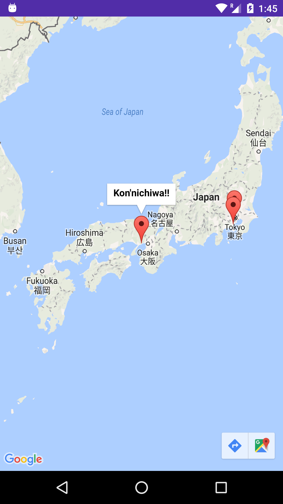

Now we just have to add a community map button to our Main view to view all of the markers on our map.
In content_main.xml:
<Button
android:layout_width="wrap_content"
android:layout_height="wrap_content"
android:text="Map Buton"
android:id="@+id/mapButton"
android:layout_below="@+id/button"
android:layout_centerHorizontal="true" />
In MainActivity:
//Above onCreate
Button mMapButton = (Button) findViewById(R.id.mapButton);
//In onCreate
mMapButton.setOnClickListener(new View.OnClickListener() {
@Override
public void onClick(View v) {
Intent intent = new Intent(MainActivity.this, MapsActivity.class);
startActivity(intent);
}
});
Now run your app, and take add as markers anywhere in the world to your backed-up map!
Finally, we are done. Here is a screenshot I took of my phone of some markers I put on Japan:
You can view the messeges on any of the markers by clicking on them. :)
-Colleen
Toggle Menu